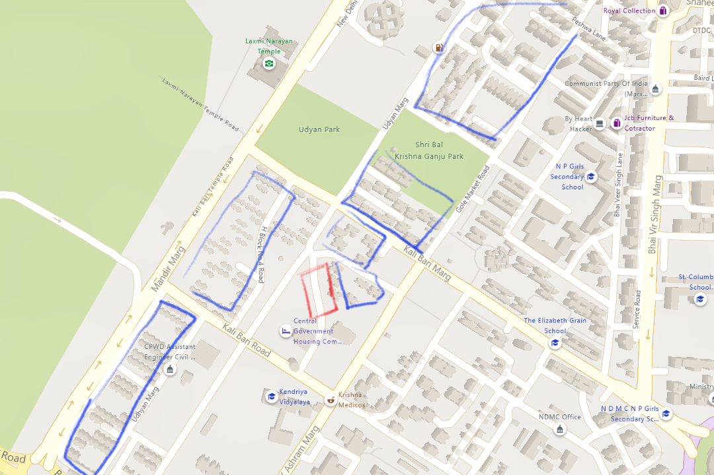
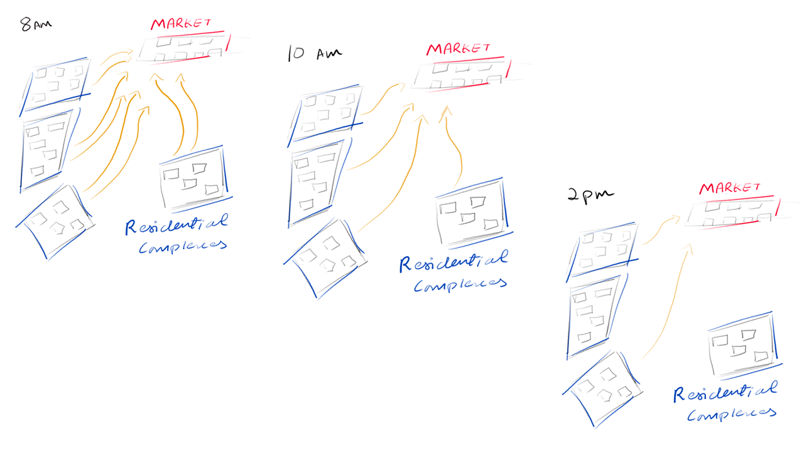
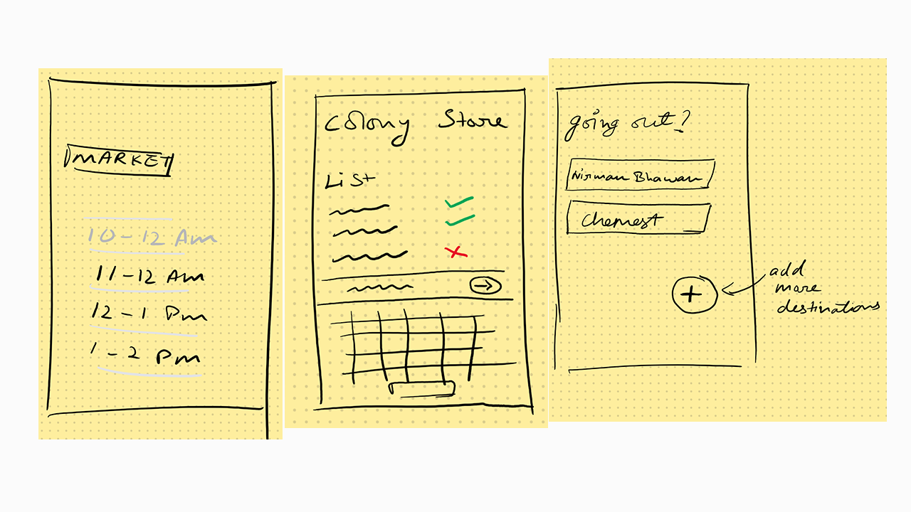

Measures that could be taken to reduce crowds at time of a pandemic
Mapping People At times such as a lockdown we can assume the people won’t be going
to wherever they like but to only places where they would get the
essentials.
Every place has a common market nearby where people of that area go to for necesities
There could be a need to visit one.
There could be a need to visit one.
Some people might not be able to work from home.
Governments approach to contact tracing with the help of technology have not proven to be always successful, in some countries like South Korea it has proven to be a successful strategy, but this cannot be said about other countries specially the ones which were ill prepared. Moreover, it requires user participation which involves a user voluntarily giving up their data (Location, travel routs, people you have interacted with etc). Many would not be willing to share this information. The safety and the good use of this information sometimes also remains in question, some of this contact tracing technologies are closed source hence the people don’t actually know what data is being sent where. Keeping all of this sensitive data on citizens at one place is dangerous. Even big companies like Facebook who have a big security infrastructure has had multiple data leaks a year.
Logical Assumption
People move out of the house to buy the essentials at a certain time of day or when the weather is good.
What is the premise of my app?
Problem
The blue marked areas are residential complexes and the red marked area is the one vegitable market avaiable for all these areas. 
People come to the market in in specific times or when the weather is good, this leads to the market having less people to too many people in certain hours. 
Solution
An moblie app or a website could be set up according to certain areas and their essential supply markets, which will distribute the traffic going to the market according to the time of day.
Local stores could be on the app where people could pay for things and would just need to go and pick them up from the store minimising the time spent at the store.
Features could be added, one could add their destination of where they would like chemist or workplace etc. 
Furthermore I would like to add that the data of the people be distributed according to the areas the app is operating and not one server, this could bring up cost but will not be a single point of failure and this type of applications could be run on a low powered server like a raspberry pi.
---- ---- ----
Stuff Rants Bruh Home